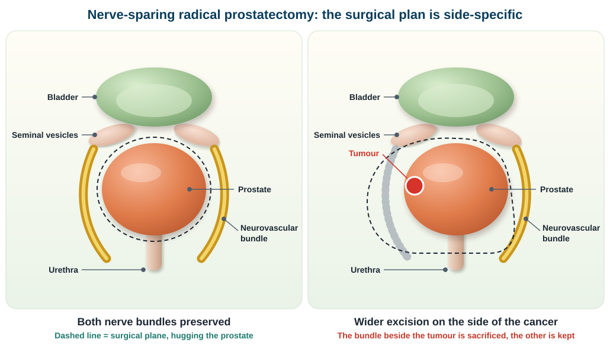
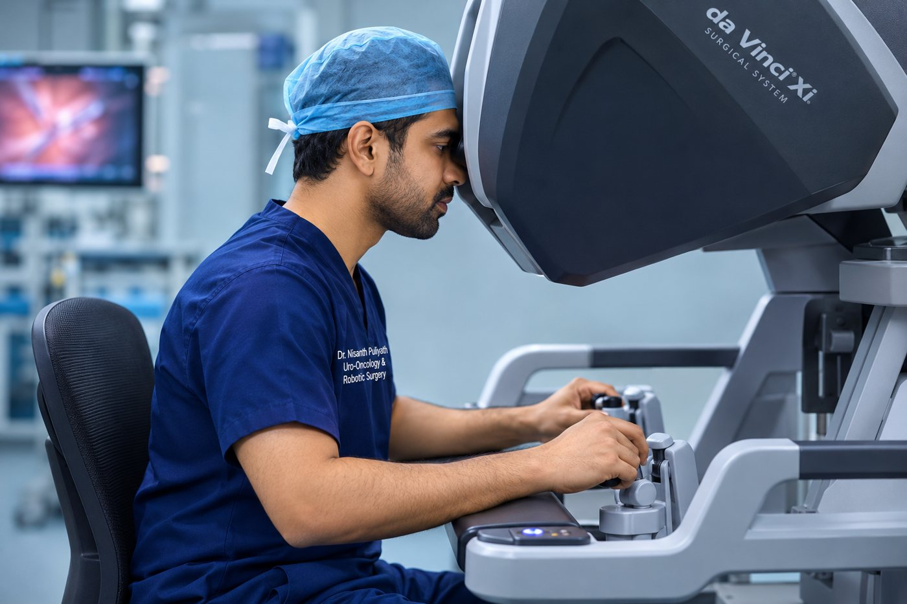
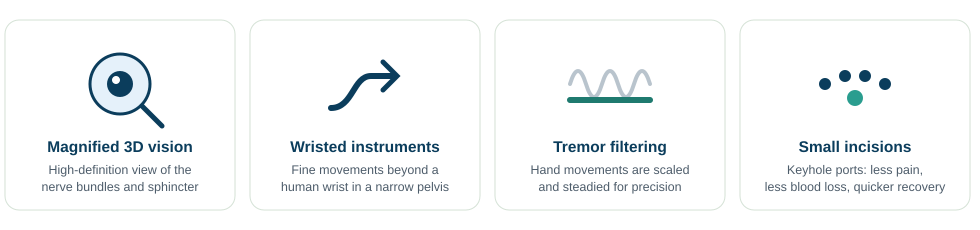
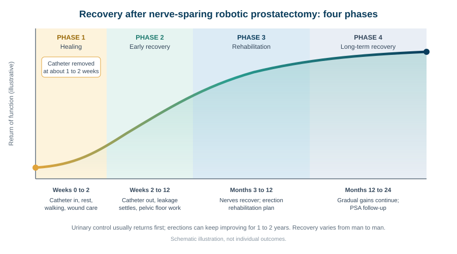

If you have been told you have prostate cancer and surgery is an option, two questions usually follow: will the cancer be removed completely, and what will life be like afterwards? Robotic nerve-sparing radical prostatectomy is designed to answer both. The cancer comes first, and wherever it is safe, we protect the tiny nerves that control erections and support urinary control.
What is a nerve-sparing radical prostatectomy?
A radical prostatectomy removes the whole prostate gland and the seminal vesicles, and sometimes nearby lymph nodes, so that localised prostate cancer is taken out completely. The prostate sits in a tight space between the bladder, the urethra and the rectum. Running along its two back-and-side surfaces are the neurovascular bundles: thin strands of nerves and blood vessels that are essential for erections.
In a nerve-sparing operation, the surgeon separates the prostate from these bundles and leaves them in place. Preserving them is associated with better recovery of erections and urinary control. It is not appropriate for every man or every side of the prostate, and that is where careful planning matters.

Why a robotic approach?
Robotic surgery does not change the aim of the operation. It changes how precisely it can be done. From a console, the surgeon controls fine instruments through small keyhole incisions while viewing a magnified, three-dimensional image. That close view is especially valuable when separating delicate nerve tissue from the prostate and when rebuilding the join between the bladder and urethra.


For patients this usually means small scars, less blood loss, less pain and a shorter hospital stay than open surgery. Cancer control with robotic surgery is considered comparable to open surgery in experienced hands, so the main advantage is recovery and precision, not a different cancer outcome.
Who is a good candidate for nerve-sparing surgery?
Nerve-sparing is a decision, not a default. It is recommended mainly for men with good erectile function before surgery and a low risk of the cancer growing through the outer wall of the prostate (extracapsular extension). European guidelines advise against nerve-sparing on a side where that risk is present, judged from stage, grade and MRI findings.
- Localised cancerConfined to the prostate, or with a very low chance of spread beyond it on the side being spared.
- Reasonable baseline functionThe better your erections and urinary control before surgery, the more there is to protect.
- Side-by-side planningA targeted MRI fusion biopsy and prostate MRI show where the cancer lies, so the nerve on the clear side can be spared even if the other side needs a wider excision.
- Honest limits of MRIMRI is better at ruling out spread beyond the prostate than at confirming it, which is why imaging, biopsy results and PSA are weighed together.
Some studies suggest that sparing the nerves can slightly raise the chance of cancer cells at the cut edge, although no direct effect on recurrence has been shown.
What happens during and after surgery
- The operationUnder general anaesthesia, through several small incisions. The prostate and seminal vesicles are removed with nerve-sparing on the chosen side(s), pelvic lymph nodes are removed if your risk requires it, and the bladder is reconnected to the urethra.
- Hospital stayMost men go home within one to two days.
- CatheterA urinary catheter stays for about one to two weeks while the join heals.
- ResultsThe removed prostate is examined in the laboratory, usually within about a week, to confirm the stage and whether further treatment is needed.
Recovery: urinary control and erections
Recovery happens in phases, and the two functions recover at different speeds.

- Urinary controlLeakage is common at first. Most men improve steadily over the first weeks and months, and the large majority regain good control. Pelvic floor exercises started before surgery help.
- ErectionsRecovery is gradual and can continue for one to two years. Age, erectile function before surgery and how much nerve tissue was preserved matter most. Rehabilitation with medication and, where needed, other aids helps many men.
- EjaculationAfter removal of the prostate and seminal vesicles, orgasm continues but without ejaculate (a dry orgasm).
Risks you should know about
Every operation carries risk. After radical prostatectomy the main ones are erectile dysfunction, urinary leakage (usually temporary), and the general risks of anaesthesia, bleeding and infection. Narrowing at the bladder-urethra join and hernia at a port site are less common. Nerve-sparing improves your chances of recovery, but it cannot guarantee them.
Is surgery the only option?
No. Depending on risk, options include active surveillance for low-risk cancer, radiotherapy, and in selected men focal therapy that treats only the cancerous area. The right choice depends on your biopsy, MRI, PSA, age and priorities, and I explain every option that applies to you, including those that do not involve surgery.
Training and experience behind your surgeon
Outcomes after nerve-sparing surgery depend heavily on the surgeon's training and experience, so it is reasonable to ask about both.
- MedantaVattikuti Fellowship
Robotic surgery and uro-oncology, Gurugram, under Dr. Gagan Gautam.
- AdventHealthFellowship, Orlando
Robotic uro-oncology training under Dr. Vipul Patel.
- UC San DiegoFellowship, USA
Uro-oncology training under Dr. Bagrodia.
- Johns HopkinsObservership, USA
Focal therapy under Dr. Arvin K. George.
- LondonHands-on training
Transperineal biopsy; research at EAU and AUA 2026.
- AIIMS · Govt. Medical CollegeMS, MCh, MBBS
AIIMS Rishikesh and Govt. Medical College Kozhikode. KSMC Reg. No. 60389.
I currently practise at Aster Medcity, Kochi, as a uro-oncologist and robotic surgeon.
Questions to ask any surgeon
- Nerve-sparing planBased on my MRI and biopsy, can the nerves be spared on one side, both sides, or neither?
- ExpectationsWhat are my realistic chances of urinary control and erections at one year?
Frequently asked questions
- Is robotic nerve-sparing prostatectomy available in Kochi?Yes. It is performed at Aster Medcity, Kochi, by Dr. Nisanth Puliyath, uro-oncologist and robotic surgeon.
- Which robot is used for the surgery?The da Vinci surgical system, at Aster Medcity's Minimal Access Robotic Surgery (MARS) centre, the first facility in Kerala to offer robotic surgery with da Vinci.
- How long should I rest after surgery?Walking starts the day after surgery, and most men manage all their daily routine by themselves within two days. Most men return to desk work in two to four weeks, avoid heavy lifting and strenuous exercise for about six weeks, and can usually drive once the catheter is out and painkillers are no longer needed. Your surgeon will individualise this.
- What diet should I follow afterwards?A light diet at first, then a balanced, high-fibre diet with plenty of fluids so that you do not strain. Limit alcohol and excess caffeine in the early weeks as they can irritate the bladder. Keeping a healthy weight helps recovery. No special diet has been proven to cure prostate cancer.
- What is the follow-up after surgery?A PSA blood test a few weeks to three months after surgery, then at regular intervals, along with review of the pathology report and of your urinary control and erections. Further treatment is needed only if the PSA rises or the pathology suggests it.
- Will I be able to have erections?Recovery is gradual. Many men regain erections, especially younger men with good function beforehand when the nerves can be spared, but it is not guaranteed.
- How long does the surgery take, and when do I go home?Usually a few hours, depending on anatomy and whether lymph nodes are removed. Most men go home within one to two days.
- Will the cancer come back?Surgery aims to cure localised cancer. The final pathology and PSA follow-up tell us how likely further treatment is.
- How do I consult at Aster Medcity?Use the booking link below, or visit the Department of Urology OPD, Monday to Saturday, 11 AM to 5 PM, with your PSA, MRI and biopsy reports.
Considering prostate cancer surgery?
Bring your PSA, MRI and biopsy reports for a personal opinion on whether robotic nerve-sparing surgery or another option suits you.
Book Your Consultation at AsterOPD: Department of Urology, Aster Medcity, Kochi · Monday to Saturday, 11 AM to 5 PM
References
- European Association of Urology. Guidelines on Prostate Cancer, surgical treatment: nerve-sparing surgery is not recommended where there is a risk of ipsilateral extracapsular extension.
- Vis AN, et al. Selection of patients for nerve sparing surgery in robot-assisted radical prostatectomy. BJUI Compass, 2022.
- Multiparametric MRI for staging of prostate cancer: predictive factors for identification of extracapsular extension before radical prostatectomy. Cancers, 2022.
- Degree of preservation of neurovascular bundles in radical prostatectomy and recurrence of prostate cancer: Swedish multicentre robot-assisted series. PMC8317882.